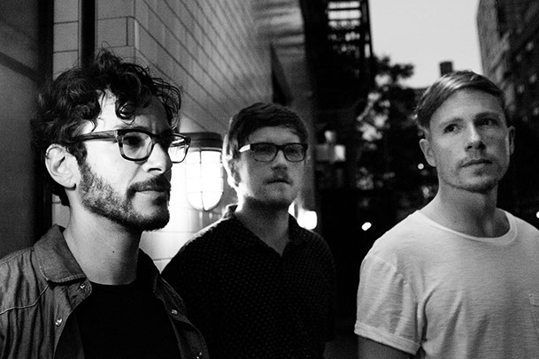

The Letter Yellow's second album, "Watercolor Overcast," debuts July 24th, 2015. The new album is a psychedelic follow-up to the soulful and groovy, rock & roll "Walking Down the Streets." In a truly analog process, "Watercolor Overcasts"'s 10 tracks were recorded, mixed, and mastered to vinyl all without ever touching a computer.
With a plan to release Watercolor Overcast on vinyl, Randy Bergida, Mike Thies, and Abe Pollack, The Letter Yellow, and Nolan Thies, engineer/co-producer, together committed to recording the album completely analog, from start to finish. They went into the studio with 10 new songs, a freer sound, a beloved Neve console, and a 24-track tape machine. Recording to tape means no computers, no fixing later. "I feel this process really bonded us as musicians. We all had to be so present with our music and our emotions, " says Randy. "And you feel when it's that magic take." The record was mixed with all hands on deck, all hands on the mixing board--the mixing happens in real time. Mastering engineer Alex DeTurk hand-cut the lacquers for the limited edition vinyl release of 500 in the Spring of 2015.
Since The Letter Yellow began in 2011 in Brooklyn, New York, founding band members Randy Bergida, Abe Pollack, and Mike Thies connected on an authentic sound. The first album "Walking Down the Streets", an energetic record with elements of rock, rhythm and blues, and pop debuted in 2012 at Glasslands in Brooklyn and introduced The Letter Yellow's signature analog style. The second album "Watercolor Overcast" reveals a psychedelic evolution in sound. Roots in rock and blues mix with a solidified sound that's free and unleashed.